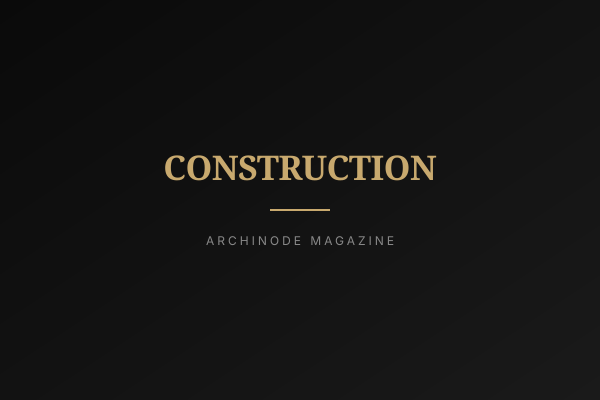

<!DOCTYPE html>
<html lang="ko">
<head>
<meta charset="UTF-8">
<meta name="viewport" content="width=device-width, initial-scale=1.0">
<title>시간을 짓는 다섯 사람 — 스튜디오 히치, 세계가 주목하다 | ARCHINODE Magazine</title>
<meta name="description" content="미국 건축 전문지 아키텍처럴 레코드가 2026 디자인 뱅가드에 서울의 스튜디오 히치를 선정했다. '완성된 형태가 아니라 만들어지는 과정'을 건축으로 보는 한 팀의 시선을 읽는다.">
<meta property="og:title" content="시간을 짓는 다섯 사람 — 스튜디오 히치, 세계가 주목하다">
<meta property="og:image" content="../assets/magazine/placeholders/design.svg">
<link rel="icon" type="image/x-icon" href="../favicon.ico">
<link rel="preconnect" href="https://fonts.googleapis.com">
<link rel="preconnect" href="https://fonts.gstatic.com" crossorigin>
<link href="https://fonts.googleapis.com/css2?family=Inter:wght@300;400;500;600;700;800;900&family=Noto+Sans+KR:wght@300;400;500;700;900&display=swap" rel="stylesheet">
<link rel="stylesheet" href="https://cdnjs.cloudflare.com/ajax/libs/font-awesome/6.5.1/css/all.min.css">
<link rel="stylesheet" href="../style.css">
<style>
.article-hero { position: relative; padding: 140px 24px 80px; text-align: center; background-image: linear-gradient(rgba(10,10,10,0.6), rgba(10,10,10,0.78)), url('../assets/magazine/placeholders/design.svg"announcement-bar"><span data-en="2026 Brand Listing —" data-ko="2026 브랜드 입점 —">2026 Brand Listing —</span> <strong data-en="Now Free" data-ko="무료">Now Free</strong> &nbsp;|&nbsp; <span data-en="List your brand on ARCHINODE at no cost." data-ko="ARCHINODE에 무료로 브랜드를 등록하세요.">List your brand on ARCHINODE at no cost.</span> <a href="../list-your-brand.html" data-en="Learn more →" data-ko="자세히 보기 →">Learn more &rarr;</a></div>
<header class="header" id="header"><div class="container"><a href="../index.html" class="logo">ARCHINODE <span class="logo-sub">건축을 잇다</span></a><nav class="main-nav" id="mainNav"><div class="nav-dropdown"><button class="nav-dropdown-trigger" onclick="toggleCatMenu()" data-en="Categories" data-ko="카테고리">Categories <i class="fas fa-chevron-down"></i></button><div class="nav-dropdown-menu" id="catMenu"><a href="../categories/furniture.html"><span>Furniture</span><small>가구</small></a><a href="../categories/bathroom.html"><span>Bathroom</span><small>욕실</small></a><a href="../categories/outdoor.html"><span>Outdoor</span><small>아웃도어</small></a><a href="../categories/lighting.html"><span>Lighting</span><small>조명</small></a><a href="../categories/kitchen.html"><span>Kitchen</span><small>주방</small></a><a href="../categories/office.html"><span>Office</span><small>오피스</small></a><a href="../categories/finishes.html"><span>Finishes</span><small>마감재</small></a><a href="../categories/wellness.html"><span>Wellness</span><small>웰니스</small></a><a href="../categories/decor.html"><span>Decor</span><small>데코</small></a><a href="../categories/construction.html"><span>Construction</span><small>건축자재</small></a></div></div><a href="../brands.html" data-en="Brands" data-ko="브랜드">Brands</a><a href="../trend-report.html" data-en="Brand Magazine" data-ko="브랜드 매거진">Brand Magazine</a><a href="../magazine.html" data-en="Magazine" data-ko="매거진" style="color:var(--black);font-weight:600;">Magazine</a><a href="../about.html" data-en="About" data-ko="소개">About</a><a href="../list-your-brand.html" class="nav-cta" data-en="List Your Brand" data-ko="브랜드 입점">List Your Brand</a></nav><div class="header-actions"><a href="../brand-portal/login.html" style="font-size:0.82rem;color:#C8A96E;font-weight:600;" data-en="Brand Login" data-ko="브랜드 로그인">Brand Login</a><button class="search-toggle" onclick="toggleSearch()" aria-label="Search"><i class="fas fa-search"></i></button><a href="../auth/profile.html" aria-label="Saved"><i class="far fa-bookmark"></i></a><a href="#" class="lang-switch" onclick="toggleLang(event)">KR / EN</a><button class="mobile-toggle" onclick="toggleMobile()" aria-label="Menu"><i class="fas fa-bars"></i></button></div></div></header>
<div class="search-overlay" id="searchOverlay"><span class="search-close" onclick="toggleSearch()">&times;</span><div class="search-box"><input type="text" placeholder="Search brands, products, designers..." data-en-placeholder="Search brands, products, designers..." data-ko-placeholder="브랜드, 제품, 디자이너 검색..."><button><i class="fas fa-arrow-right"></i></button></div></div>
<section class="article-hero">
    <span class="tag" data-en="Design" data-ko="디자인">Design</span>
    <h1 data-en="The Five People Who Build Time" data-ko="시간을 짓는 다섯 사람">시간을 짓는 다섯 사람</h1>
    <p class="subtitle" data-en="Architectural Record names Seoul's Studio Heech to Design Vanguard 2026 — a studio that treats making, not the finished form, as the work itself." data-ko="아키텍처럴 레코드가 2026 디자인 뱅가드에 서울의 스튜디오 히치를 선정했다. 완성된 형태가 아니라 만들어지는 과정을 작업으로 보는 팀이다.">아키텍처럴 레코드가 2026 디자인 뱅가드에 서울의 스튜디오 히치를 선정했다. 완성된 형태가 아니라 만들어지는 과정을 작업으로 보는 팀이다.</p>
    <div class="meta">2026-06-12 <span>·</span> ARCHINODE Editorial</div>
</section>
<article class="article-body">
<p class="lead" data-en="On June 11, 2026, the American architecture magazine Architectural Record published its Design Vanguard 2026 selection — its annual list of young studios to watch worldwide. Among the names was Studio Heech, a five-person practice founded in Seoul in 2018 by Heechan Park. The recognition matters less as another line on an award sheet than as a small signal: a Korean studio that works at the awkward seam between objects, exhibitions, pavilions, and buildings is being read, abroad, as a coherent voice." data-ko="2026년 6월 11일, 미국 건축 전문지 아키텍처럴 레코드가 해마다 주목할 신생 스튜디오를 꼽는 '디자인 뱅가드 2026'을 발표했다. 명단에는 2018년 박희찬이 서울에 설립한 다섯 명의 작은 팀, 스튜디오 히치가 들어 있었다. 이 선정은 수상 목록에 한 줄이 더해진 사건이라기보다, 작은 신호로 읽힌다. 사물과 전시, 파빌리온과 건물 사이의 어색한 이음매에서 일하는 한국 스튜디오가, 해외에서 하나의 또렷한 목소리로 읽히기 시작했다는 신호다.">2026년 6월 11일, 미국 건축 전문지 아키텍처럴 레코드가 해마다 주목할 신생 스튜디오를 꼽는 '디자인 뱅가드 2026'을 발표했다. 명단에는 2018년 박희찬이 서울에 설립한 다섯 명의 작은 팀, 스튜디오 히치가 들어 있었다. 이 선정은 수상 목록에 한 줄이 더해진 사건이라기보다, 작은 신호로 읽힌다. 사물과 전시, 파빌리온과 건물 사이의 어색한 이음매에서 일하는 한국 스튜디오가, 해외에서 하나의 또렷한 목소리로 읽히기 시작했다는 신호다.</p>
<h2 data-en="Why the World Looked at a Five-Person Studio" data-ko="세계는 왜 다섯 명의 스튜디오를 봤나">세계는 왜 다섯 명의 스튜디오를 봤나</h2>
<p data-en="Design Vanguard is not a prize for the biggest building or the most photogenic facade. Architectural Record uses it to flag practices whose way of thinking might shape the next decade. Park's path reads as deliberately wide rather than tall: an M.Arch and postgraduate diploma from the Bartlett School of Architecture at University College London, five years at Hopkins Architects in London, then a return to Seoul to open a studio that designs industrial products, exhibitions, temporary pavilions, interactive installations — and, yes, buildings. In an industry that rewards specialization, choosing to stay plural is itself a position." data-ko="디자인 뱅가드는 가장 큰 건물이나 가장 사진이 잘 받는 입면에 주는 상이 아니다. 아키텍처럴 레코드는 이 명단으로 향후 10년의 사고방식을 바꿀 만한 실무를 짚는다. 박희찬의 경로는 높이 쌓기보다 넓게 펼치는 쪽에 가깝다. 영국 UCL 바틀렛 건축대학원에서 석사와 포스트그래듀에이트 디플로마를 받고, 런던의 홉킨스 아키텍츠에서 5년간 일한 뒤 서울로 돌아와 스튜디오를 열었다. 그 스튜디오는 산업 제품과 전시, 임시 파빌리온, 인터랙티브 설치, 그리고 건물을 함께 다룬다. 전문화를 보상하는 업계에서, 여럿으로 남기를 택한 것 자체가 하나의 입장이다.">디자인 뱅가드는 가장 큰 건물이나 가장 사진이 잘 받는 입면에 주는 상이 아니다. 아키텍처럴 레코드는 이 명단으로 향후 10년의 사고방식을 바꿀 만한 실무를 짚는다. 박희찬의 경로는 높이 쌓기보다 넓게 펼치는 쪽에 가깝다. 영국 UCL 바틀렛 건축대학원에서 석사와 포스트그래듀에이트 디플로마를 받고, 런던의 홉킨스 아키텍츠에서 5년간 일한 뒤 서울로 돌아와 스튜디오를 열었다. 그 스튜디오는 산업 제품과 전시, 임시 파빌리온, 인터랙티브 설치, 그리고 건물을 함께 다룬다. 전문화를 보상하는 업계에서, 여럿으로 남기를 택한 것 자체가 하나의 입장이다.</p>
<figure><figcaption data-en="A wood-and-steel stool for a renovated brewery venue became the piece that imprinted the studio's identity (Image: Unsplash)" data-ko="개조한 양조장 문화공간을 위해 만든 목재·철 스툴이 스튜디오의 정체성을 각인시킨 작업이 되었다 (이미지: Unsplash)">개조한 양조장 문화공간을 위해 만든 목재·철 스툴이 스튜디오의 정체성을 각인시킨 작업이 되었다 (이미지: Unsplash)</figcaption></figure>
<p data-en="Architectural Record points to a small object as the studio's turning point: a wood-and-steel stool made for a renovated brewery turned cultural venue. Not a tower, not a museum — a stool. That a piece of furniture could carry a firm's identity tells you where the studio places weight. For Park, the stool and the building belong to the same question, asked at different scales: how does a thing get made, and what does the making leave behind in it." data-ko="아키텍처럴 레코드는 스튜디오의 전환점으로 작은 사물 하나를 지목한다. 문화공간으로 개조된 양조장을 위해 만든 목재·철 스툴이다. 탑도 아니고 미술관도 아닌, 스툴. 가구 한 점이 한 회사의 정체성을 짊어질 수 있다는 사실은, 이 스튜디오가 무게를 어디에 두는지 말해준다. 박희찬에게 스툴과 건물은 규모만 다를 뿐 같은 질문에 속한다. 하나의 사물은 어떻게 만들어지며, 그 만들어짐은 사물 안에 무엇을 남기는가.">아키텍처럴 레코드는 스튜디오의 전환점으로 작은 사물 하나를 지목한다. 문화공간으로 개조된 양조장을 위해 만든 목재·철 스툴이다. 탑도 아니고 미술관도 아닌, 스툴. 가구 한 점이 한 회사의 정체성을 짊어질 수 있다는 사실은, 이 스튜디오가 무게를 어디에 두는지 말해준다. 박희찬에게 스툴과 건물은 규모만 다를 뿐 같은 질문에 속한다. 하나의 사물은 어떻게 만들어지며, 그 만들어짐은 사물 안에 무엇을 남기는가.</p>
<h2 data-en="Architecture as a Sequence, Not a Snapshot" data-ko="건축은 스냅숏이 아니라 시퀀스다">건축은 스냅숏이 아니라 시퀀스다</h2>
<p data-en="&quot;Architecture is a process of making before it becomes a completed form,&quot; Park says, and the sentence is more than a slogan. Much of the studio's work reuses old buildings: the Bangjja Yugi Museum, the Sanyang Brewery. Reuse forces time into the foreground. You cannot pretend the structure began with you; you inherit decades of someone else's decisions and add your chapter. Park describes being interested in how architecture &quot;unfolds as a sequence of experiences — how it is perceived, inhabited, and transformed over time.&quot; The building is not a photograph taken on opening day. It is a film that keeps running after the architect leaves." data-ko="&quot;건축은 완성된 형태가 되기 전에 만들어지는 과정&quot;이라고 박희찬은 말한다. 이 문장은 구호 이상이다. 스튜디오의 작업 상당수는 오래된 건물을 다시 쓴다. 방짜유기박물관, 산양양조장. 재생은 시간을 전면으로 끌어낸다. 그 구조가 나에게서 시작된 척할 수 없다. 누군가의 수십 년 치 결정을 물려받아, 그 위에 내 장(章)을 더할 뿐이다. 박희찬은 건축이 &quot;경험의 연속으로 펼쳐지는 방식 — 어떻게 지각되고, 거주되고, 시간에 따라 변형되는가&quot;에 관심이 있다고 말한다. 건물은 개관일에 찍은 사진이 아니다. 건축가가 떠난 뒤에도 계속 돌아가는 한 편의 영화다.">"건축은 완성된 형태가 되기 전에 만들어지는 과정"이라고 박희찬은 말한다. 이 문장은 구호 이상이다. 스튜디오의 작업 상당수는 오래된 건물을 다시 쓴다. 방짜유기박물관, 산양양조장. 재생은 시간을 전면으로 끌어낸다. 그 구조가 나에게서 시작된 척할 수 없다. 누군가의 수십 년 치 결정을 물려받아, 그 위에 내 장(章)을 더할 뿐이다. 박희찬은 건축이 "경험의 연속으로 펼쳐지는 방식 — 어떻게 지각되고, 거주되고, 시간에 따라 변형되는가"에 관심이 있다고 말한다. 건물은 개관일에 찍은 사진이 아니다. 건축가가 떠난 뒤에도 계속 돌아가는 한 편의 영화다.</p>
<blockquote data-en="&quot;Architecture is a process of making before it becomes a completed form.&quot; The stool and the building ask the same question at different scales — what does the making leave behind?" data-ko="&quot;건축은 완성된 형태가 되기 전에 만들어지는 과정이다.&quot; 스툴과 건물은 규모만 다른 같은 질문이다 — 만들어짐은 무엇을 남기는가.">"건축은 완성된 형태가 되기 전에 만들어지는 과정이다." 스툴과 건물은 규모만 다른 같은 질문이다 — 만들어짐은 무엇을 남기는가.</blockquote>
<p data-en="That sensibility lands differently in Korea than in cities with longer architectural memory. Here, the default verb has long been demolish-and-replace: a building reaching forty is treated less as heritage than as a redevelopment opportunity. A studio that chooses to keep the old brewery's bones, and to design the new layer so the seam shows rather than hides, is quietly arguing for a different relationship between a city and its own past. The forthcoming projects extend the line — St. Benedict Pilgrim's House in Jeju, a house in the mountains of Daegwallyeong, a house in Dongdaemun — small in scale, patient in intent." data-ko="이 감수성은 건축적 기억이 더 긴 도시들에서와 한국에서 다르게 내려앉는다. 이곳의 기본 동사는 오랫동안 '헐고 다시 짓기'였다. 마흔 살이 된 건물은 유산이라기보다 재개발의 기회로 취급된다. 옛 양조장의 뼈대를 남기기로 택하고, 새로 더한 켜의 이음매를 감추기보다 드러내도록 설계하는 스튜디오는, 도시와 그 자신의 과거 사이의 다른 관계를 조용히 주장하는 셈이다. 예정된 작업들도 같은 선을 잇는다. 제주의 성 베네딕도 순례자의 집, 평창 대관령 산속의 주택, 서울 동대문의 주택 — 규모는 작고, 의도는 느긋하다.">이 감수성은 건축적 기억이 더 긴 도시들에서와 한국에서 다르게 내려앉는다. 이곳의 기본 동사는 오랫동안 '헐고 다시 짓기'였다. 마흔 살이 된 건물은 유산이라기보다 재개발의 기회로 취급된다. 옛 양조장의 뼈대를 남기기로 택하고, 새로 더한 켜의 이음매를 감추기보다 드러내도록 설계하는 스튜디오는, 도시와 그 자신의 과거 사이의 다른 관계를 조용히 주장하는 셈이다. 예정된 작업들도 같은 선을 잇는다. 제주의 성 베네딕도 순례자의 집, 평창 대관령 산속의 주택, 서울 동대문의 주택 — 규모는 작고, 의도는 느긋하다.</p>
<h2 data-en="Where Korea Sits on the Global Map" data-ko="한국은 세계 지도 어디에 있나">한국은 세계 지도 어디에 있나</h2>
<p data-en="Read alongside the rest of the 2026 list, the selection says something about how Korean design is now received. For years the international story about Korea was export-scale — big firms, big towers, big tech. Design Vanguard works at the opposite end: it watches the small studios that set tone before they set records. A Seoul five-person practice appearing there, in the same week the same magazine spotlighted other emerging firms worldwide, suggests Korea is no longer read only as a market or a manufacturing base, but as a place that produces design ideas worth importing." data-ko="2026년 명단 전체와 나란히 놓고 보면, 이 선정은 한국 디자인이 지금 어떻게 받아들여지는지를 말해준다. 오랫동안 한국에 대한 국제적 서사는 수출 규모의 것이었다. 큰 회사, 큰 탑, 큰 기술. 디자인 뱅가드는 정반대 끝에서 일한다. 기록을 세우기 전에 분위기를 만드는 작은 스튜디오를 본다. 서울의 다섯 명짜리 실무가, 같은 주에 같은 잡지가 세계의 다른 신생 회사들을 함께 조명한 그 명단에 등장했다는 것은, 한국이 더는 시장이나 제조 기지로만 읽히지 않고 수입할 가치가 있는 디자인 아이디어를 만들어내는 곳으로 읽히기 시작했음을 시사한다.">2026년 명단 전체와 나란히 놓고 보면, 이 선정은 한국 디자인이 지금 어떻게 받아들여지는지를 말해준다. 오랫동안 한국에 대한 국제적 서사는 수출 규모의 것이었다. 큰 회사, 큰 탑, 큰 기술. 디자인 뱅가드는 정반대 끝에서 일한다. 기록을 세우기 전에 분위기를 만드는 작은 스튜디오를 본다. 서울의 다섯 명짜리 실무가, 같은 주에 같은 잡지가 세계의 다른 신생 회사들을 함께 조명한 그 명단에 등장했다는 것은, 한국이 더는 시장이나 제조 기지로만 읽히지 않고 수입할 가치가 있는 디자인 아이디어를 만들어내는 곳으로 읽히기 시작했음을 시사한다.</p>
<figure><figcaption data-en="The studio's interest is in how a building is perceived, inhabited, and transformed over time" data-ko="스튜디오의 관심은 건물이 어떻게 지각되고 거주되고 시간에 따라 변형되는가에 있다">스튜디오의 관심은 건물이 어떻게 지각되고 거주되고 시간에 따라 변형되는가에 있다</figcaption></figure>
<div class="editor-note">
<h3 data-en="Editor's Note" data-ko="편집장 코멘트">편집장 코멘트</h3>
<p data-en="For ARCHINODE, the Studio Heech story is a useful corrective. A materials and design platform naturally drifts toward the new — the launch, the spec, the next finish. But this studio's whole argument is that value accrues over time, in reuse, in the visible seam between old and new. That is exactly the case Korea's renovation and remodeling market needs made well: keeping a building is not a compromise against design, it can be the design. The brands worth watching are the ones whose products read better at year ten than on installation day." data-ko="ARCHINODE 입장에서 스튜디오 히치 이야기는 유용한 교정이다. 자재·디자인 플랫폼은 자연히 새것 쪽으로 끌린다. 출시, 스펙, 다음 마감재. 그러나 이 스튜디오의 논지 전체는 가치가 시간 속에서, 재사용 속에서, 옛것과 새것 사이의 드러난 이음매 속에서 쌓인다는 것이다. 이것이야말로 한국의 리노베이션·리모델링 시장이 잘 설득해야 할 논점이다. 건물을 남기는 일은 디자인에 대한 타협이 아니라, 그 자체가 디자인일 수 있다. 주목할 브랜드는 설치 당일보다 10년 차에 더 좋게 읽히는 제품을 만드는 곳이다.">ARCHINODE 입장에서 스튜디오 히치 이야기는 유용한 교정이다. 자재·디자인 플랫폼은 자연히 새것 쪽으로 끌린다. 출시, 스펙, 다음 마감재. 그러나 이 스튜디오의 논지 전체는 가치가 시간 속에서, 재사용 속에서, 옛것과 새것 사이의 드러난 이음매 속에서 쌓인다는 것이다. 이것이야말로 한국의 리노베이션·리모델링 시장이 잘 설득해야 할 논점이다. 건물을 남기는 일은 디자인에 대한 타협이 아니라, 그 자체가 디자인일 수 있다. 주목할 브랜드는 설치 당일보다 10년 차에 더 좋게 읽히는 제품을 만드는 곳이다.</p>
</div>
</article>
<div class="article-meta-foot">
  <span data-en="Category: Design · By: ARCHINODE Editorial · 2026-06-12" data-ko="카테고리: Design · 작성: ARCHINODE 편집국 · 2026-06-12">카테고리: Design · 작성: ARCHINODE 편집국 · 2026-06-12</span><br>
  <span data-en="Sources: Architectural Record, Design Vanguard 2026: Studio Heech (June 11, 2026)" data-ko="소스: 아키텍처럴 레코드, 디자인 뱅가드 2026: 스튜디오 히치 (2026-06-11)">소스: 아키텍처럴 레코드, 디자인 뱅가드 2026: 스튜디오 히치 (2026-06-11)</span>
</div>
<div class="article-nav">
  <a href="../magazine.html" data-en="← Back to Magazine" data-ko="← 매거진으로">&larr; Back to Magazine</a>
  <a href="../magazine.html" data-en="Back to Magazine →" data-ko="매거진으로 →">Back to Magazine &rarr;</a>
</div>
<footer class="footer"><div class="container"><div class="footer-grid"><div class="footer-brand"><div class="logo">ARCHINODE <span class="logo-sub">건축을 잇다</span></div><p data-en="Connecting global architecture &amp; design brands with the Korean market." data-ko="글로벌 건축·디자인 브랜드를 한국 시장과 연결합니다.">Connecting global architecture &amp; design brands with the Korean market.</p><div class="footer-social"><a href="#" aria-label="Instagram"><i class="fab fa-instagram"></i></a><a href="#" aria-label="LinkedIn"><i class="fab fa-linkedin-in"></i></a><a href="#" aria-label="YouTube"><i class="fab fa-youtube"></i></a><a href="#" aria-label="Pinterest"><i class="fab fa-pinterest-p"></i></a></div></div><div class="footer-col"><h4 data-en="Categories" data-ko="카테고리">Categories</h4><ul><li><a href="../categories/furniture.html" data-en="Furniture" data-ko="가구">Furniture</a></li><li><a href="../categories/bathroom.html" data-en="Bathroom" data-ko="욕실">Bathroom</a></li><li><a href="../categories/lighting.html" data-en="Lighting" data-ko="조명">Lighting</a></li><li><a href="../categories/kitchen.html" data-en="Kitchen" data-ko="주방">Kitchen</a></li><li><a href="../categories/outdoor.html" data-en="Outdoor" data-ko="아웃도어">Outdoor</a></li></ul></div><div class="footer-col"><h4 data-en="Company" data-ko="회사">Company</h4><ul><li><a href="../about.html" data-en="About" data-ko="소개">About</a></li><li><a href="../magazine.html" data-en="Magazine" data-ko="매거진">Magazine</a></li><li><a href="../trend-report.html" data-en="Brand Magazine" data-ko="브랜드 매거진">Brand Magazine</a></li><li><a href="../contact.html" data-en="Contact" data-ko="문의">Contact</a></li><li><a href="../for-brands.html" data-en="For Brands" data-ko="브랜드를 위해">For Brands</a></li></ul></div><div class="footer-col"><h4 data-en="Legal" data-ko="법적">Legal</h4><ul><li><a href="../terms.html" data-en="Terms" data-ko="이용약관">Terms</a></li><li><a href="../privacy.html" data-en="Privacy" data-ko="개인정보처리방침">Privacy</a></li></ul></div></div><div class="footer-business-info" style="border-top:1px solid rgba(255,255,255,0.08);padding-top:20px;margin-top:40px;margin-bottom:20px;font-size:0.68rem;color:rgba(255,255,255,0.3);line-height:1.8;">상호: 비비들리바이브 (VIVIDELIVIBE) &nbsp;|&nbsp; 대표: 박승리 &nbsp;|&nbsp; 사업자등록번호: 640-03-02879<br>주소: 경기도 의왕시 내손로 13, 103동 804호 &nbsp;|&nbsp; 이메일: office@archinode.org</div><div class="footer-bottom"><p>&copy; 2026 ARCHINODE. All rights reserved.</p><div class="footer-bottom-links"><a href="../terms.html" data-en="Terms" data-ko="이용약관">Terms</a><a href="../privacy.html" data-en="Privacy Policy" data-ko="개인정보처리방침">Privacy Policy</a></div></div></div></footer>
<script>
var header = document.getElementById('header');
window.addEventListener('scroll', function() { if (window.scrollY > 10) header.classList.add('scrolled'); else header.classList.remove('scrolled'); });
function toggleSearch() { document.getElementById('searchOverlay').classList.toggle('active'); }
function toggleMobile() { document.getElementById('mainNav').classList.toggle('active'); }
function toggleCatMenu() { document.getElementById('catMenu').classList.toggle('active'); }
</script>
<script src="../search.js"></script>
<script src="../lang.js?v=20260618"></script>
<script src="../auth-ui.js"></script>
</body>
</html>
